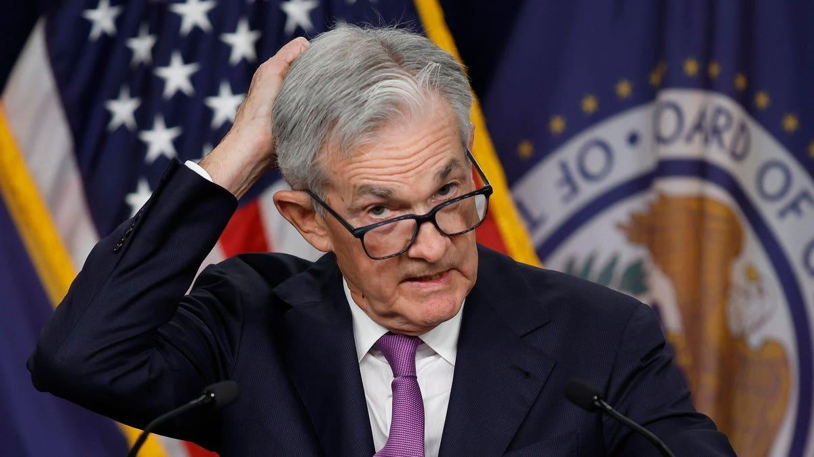

Fed Chair Powell Says He Won't Forecast A 'Soft Landing'-Here’s What That Goldilocks Scenario Looks Like And Why Powell Won’t CommitTopline Federal Reserve chairman Jerome Powell pushed back on the notion Wednesday that the U.S. is on track to stick a “soft landing” despite the central bank increasingly indicating that’s where it expects the economy to head, casting light on the tightrope the Fed tiptoes down as it seeks to stabilize inflation while keeping the economy strong. Key Facts Powell declined to commit to a soft landing as a baseline scenario for the U.S., saying he doesn’t want to “handicap the likelihood” of the scenario, in comments at a press conference following the Fed’s announcement on interest rates and release of its short- and medium-run economic forecasts. An increasingly prevalent buzzword phrase over the last year as the Fed attempts to right the economy after a period of historically high inflation, a soft landing entails a central bank rightsizing the economy perfectly to slow price increases while keeping employment robust and the economy out of an extended downturn, or recession. The Fed’s updated economic projections Wednesday sure seemed to indicate the central bank is expecting conditions to mirror a soft landing, significantly upping their median estimates for gross domestic output this year and next and decreasing estimates for the unemployment rate from 2023 to 2025. Wednesday’s forecast show “the Fed is now expecting a soft landing” as it no longer expects higher rates for a multiyear-period to send the economy into a full-fledged recession, Raymond James' chief economist Eugenio Aleman explained in emailed comments. Yet Powell said Wednesday it’s “not up to me” to predict where the U.S. economy will head, echoing his and other Fed staff’s repeated assertions that its monetary policy will depend on what the data reveals. Key Background The Fed’s central tenet of operations is its “dual mandate” requiring it to pursue stable prices and maximum employment for Americans. Historically, bringing down inflation significantly requires a noticeable uptick in unemployment, but the jobless rate has stayed between 3.4% and 3.8% over the last year as headline inflation declined considerably. “The combination of a sharply lower path for the unemployment rate and similar inflation projections suggests that the FOMC believes that inflation can come down without a meaningful increase in the unemployment rate,” Goldman Sachs’ chief economist Jan Hatzius summarized Wednesday, giving merit to the idea of the Fed’s soft landing aspirations. Surprising Fact The Fed forecasted a “mild recession” for the U.S. by year’s end amid the banking crisis this spring, before backing off that prediction by July as a stream of economic data revealed the “resiliency” of the economy. What To Watch For If inflation actually comes back down to the 2% level intended by the Fed. Annual inflation as measured by the consumer price index inched up to 3.7% last month, while skyrocketing gas prices could inflict further pain for wallets. Further Reading |
 |